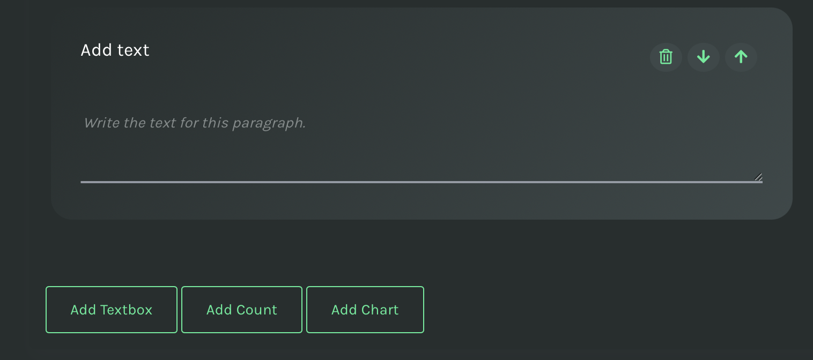

User Guide
If you haven't installed the Dashboard yet, check out the instructions. If you're ready instead, visit http://127.0.0.1:5000/.
Authenticate
To use MELODY both locally and in a production environment, your instance must be paired with a GitHub repository and an OAuth Application (see how to create an OAuth app connected to your instance of MELODY and how to approve the app on your repository).
After creating the OAuth app, modify the file conf.py in the root directory to configure the login.
clientID='OAUth client id'
clientSecret='OAUth client secret id'
owner='the owner of the repository'
repo_name='the repository name'
token='the bearer token of the admin of the repository'
Collaborators of the repository can then sign in MELODY with their GitHub account.
Welcome Page
The welcome page gives you access to the most important functionalities.

The left sidebar includes some exemplar data stories, grouped by section. From the top right menu you can access the documentation (this document), create a new data story, and sign in with your GitHub credentials.
Create a new story
To create a new story, click on Create a story, in the top right menu. An initial setup page will require you to input some information to prepare the canvas of your story.

Data stories are built on templates, a set of layout instructions for paginating contents and setup their interactivity. The idea is to provide a design that can be customised and adapted to different situations while maintaining a consistent style. We plan to offer three different templates:
- Statistics: allows a user to display on a canvas a sequence of textual contents, charts, and data summaries.
- Map: allows to create a geographical map. Data points can be filtered with user-defined filters, and explored via their metadata, statistics and other charts.
- Timeline: allows to manipulate time series into adaptive charts, by adding or removing filters that intervene on the chart visualization.
You can preview some features of templates and select your favourite from the dropdown.
Currently only the Statistics template is available.
Sections are thematic groups including one or more stories. Section names appear on the left sidebar of MELODY. You can either create a new section by entering a new section title, or you can select one of the existing ones from the dropdown.

The title of the data story doesn't need much explanation. It's the first prominent communication tool in the narrative of the data story you're going to create.
Lastly, you must include the URL of an online SPARQL endpoint to retrieve data and populate the charts. Check carefully that it's working.

Once you submit your setup information, a link to your datastory will appear in the left sidebar under the name of the section you chose. You'll be redirected to a user-friendly interface based on the template you've chosen. The new interface will alow you to write and run SPARQL queries and to populate the elements composing the canvas of your final data story. The interface is WYSIWYG (What You See Is What You Get), meaning you will be able to immediately see results of your queries as charts, modify the order of contents (when applicable) and preview the final data story to be published.
Templates
The Statistics template
The Statistics template is designed for a classic data story, where you can combine textual information with statistical information such as counts and charts to create a sequential narrative.

You can change the default colors of your story. The new colors will be used in every chart and will create a duotone background effect on the secondary menu.
Similarly, the title, the subtitle, the introduction, and the curators of the story (in the secondary menu) can be modified. The position of these elements in the canvas cannot be modified.
The optional elements of the page are: textboxes, countings, and charts. To add a new element use the respective buttons. Each box can be moved up and down or removed.
Counts
Counts are boxes including a counting that is the result of a SPARQL query and a label, that can be manually associated. Countings can be used to give an overview of the dataset. A count requires you to fill in two text areas:
- A SPARQL query that returns a number. The returned variable name MUST be named "count".
- A short label to be associated to the number in the box.
For instance, a counting can report the number of instances of a certain type. The SPARQL query may look like follows:
SELECT (COUNT(?s) AS ?count) WHERE {?s ?p <https://w3id.org/musow/vocab/repository>.}
Once the query is included in the text area, it automatically runs against the endpoint selected in the preliminary setup, and the resulting box appears on top.

Charts
Currently, in the statistics template you can choose between three types of charts: Bar chart, Line chart, and Doughnut chart. For each chart, the following information must be provided:
- the type of chart (required), to be selected from a dropdown
- the SPARQL query (required), to be added in a text area
- the chart Title (required)
- one or more operations (optional), to aggregate data returned by the query.
Overall, a SPARQL query to build a chart can be of two types:
- Aggregating: the query retrieves aggregated data that are automatically post-processed to be displayed in a chart. The query returns two variables, respectively called ?x and ?y which are respectively a categorical/numerical value (x), and a numerical value (y).
- Non-Aggregating: the query retrieves non-aggregated data, which are not immediately suitable for charting, hence data need some post-processing operations, provided by the interface. The query returns one variable called ?label, whose values are aggregated with the count operator available under the chart.
The returned variables and values of the query depend on the type of chart chosen. In addition, depending on the optional operations chosen, there are also requirements for the variable names.
For instance, the following aggregating query:
SELECT ?x (COUNT(?content) AS ?y)
WHERE {
?content <https://schema.org/additionalType> ?type.
?type rdfs:label ?x .
} GROUP BY ?x returns two variables (x and y) that are ready to fit in the requirements of the chart.

In case of a non-aggregating query, the query must return one variable called ?label, and the operation count must be selected in order to plot results. For instance:
SELECT ?label
WHERE {
?content <https://schema.org/additionalType> ?type .
?type rdfs:label ?label .
}
returns the same values as the aggregating query above, provided the checbox Count is selected.

Publish and Export
Once the form is submitted the form, you are redirected to the data story, also available from the sidebar on the left, where to find the link to modify the story in the future.
The final data story presents elements of the canvas in the sequence selected by the designer and presents a few metadata in the secondary menu. The story can be exported as a PDF document and as a static HTML document, ready to be published in other platforms.

Similarly, each chart can be saved as a .png image, or exported as an embeddable HTML code snippet.